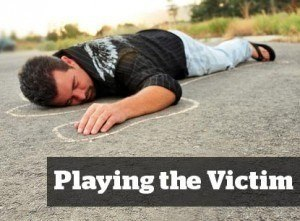

< < < Back
Did Feminist Writer Emily Eveland Lie About Beating Up Her Rapist? – Return Of Kings
XO Jane is not a publication known for its hard-hitting journalism. Still, one hopes that the articles posted there would at least be not completely made up. In the absence of credible evidence to the contrary, we should default to believing that a woman’s accusations of sexual assault are true, should we not?
I do not believe—unlike other pundits in the manosphere—that all public rape accusations, unaccompanied by law enforcement involvement, are necessarily false. But I cannot view with anything but complete incredulity Emily Eveland’s remarkable piece of clickbait, “My Friends And I Beat Up My Rapist, And I Will Never Apologize For Getting Revenge.”
“Before he raped me, I considered Sean my friend,” writes Eveland. She goes on to craft a compelling, dramatic narrative. Sean took advantage of her while she was too drunk, or too drugged, to resist. He didn’t care that she had a tampon in. He left his used condom behind. He had the temerity to act like he was her boyfriend when they ate at a local diner the next day. It was only after having brunch with her rapist, evidently, that Emily decided, “I think I was raped.” The story, had it ended there, would be an unremarkable one. But it gets decidedly weirder.
Emily Eveland, Serial Victim

Eveland has been raped seemingly time and time again, in her analysis. “When Sean raped me,” she writes, “I knew my survival depended on creating an alternate ending. After years of wearing shame like a self-fastened straight jacket, I finally trusted that the assaults were not my fault. And I was livid. I knew the police wouldn’t help. I had heard of friends going to the police, only to be blamed or slut-shamed. I assumed I would be met with similar accusations, since I was drunk and considered Sean my friend.”
Just like that, Eveland summarily dismisses any thought of going to the police or seeking legal redress for the assault. It’s a cynical view, to be sure. There seem to be an awful lot of feminist buzzwords sprinkled in there, but that by itself is not alarming or suspicious. No, it’s what happens next that should raise your eyebrows.
“I called my ex-boyfriend, a relative, and a friend, told them I had been raped, and asked the three of them to come to Rochester,” she writes.
I said I had a plan. They didn’t ask questions. My ex hopped a train from Indiana to Rochester and the others came in from Chicago. Over the next three days, we held private discussions in my bedroom, met up with Sean’s roommates, and talked to his friends. The consensus was that our plan was fair.
Emily Eveland, Avenging Street Angel
The much-debated plan was to travel to Sean’s house and beat him. Ms. Eveland writes that she and the ex sang along to Tupac on the way to the assault. It’s a very rousing moment, a bit of visual imagery that emphasizes Emily’s journey to reclaim her personal power by beating the living hell out of her alleged rapist.
Eveland claims that she and her posse of ski-mask-wearing rapist-beaters arrive at Sean’s house a grand total of two weeks after Eveland was raped. They “walked through snow flurries” to his door (because Eveland repeatedly drops Rochester landmarks and other details to emphasize her connection to Upstate New York, where this event is supposed to have taken place). When Sean answered the door, they punched him, “threw him into a glass coffee table,” and screamed at him not to rape people as Eveland beat him with a “sock-in-lock.” This is presumably a padlock in a sock, because Emily Eveland has seen “Orange Is The New Black.”
“Sean said nothing throughout the attack,” Eveland claims, “just looked at the ceiling. Maybe he knew he deserved it. Maybe he was busy learning how it felt to be violated. As the others headed for the front door, I turned around once more and screamed “FUCK YOU” in my own voice — the voice Sean had tried to take away from me. I lifted my weapon and whipped it hard into his stomach.”
Eveland then describes how she had a very empowering tattoo with the slogan “Burn It To The Ground” inked on her chest. She characterizes her gang assault on her rapist as “controversial” and says that, five years after the assault, she “stands by” her decision to beat her rapist.
The only problem is that every part of her story is probably made up.
The Red Flags In Eveland’s Tale
The red flags of falsehood are numerous. The tone of the piece is straight from Feminist Central Casting, but let’s let that go by. Instead, we’ll hit the other major red flags one at a time.
The Article Is Too Good
This is some powerfully written stuff. It’s crafted so well, in fact, that you have to question the narrative, because real life seldom works out so poetically. People questioned Lorenzo Carcaterra’s Sleepers for the same reason—the story was so good it couldn’t possibly be taken from the messy, often inconvenient world of real life. I don’t for a minute believe this incredibly vivid story, replete with so much grrl-power iconography and trite feminist imagery, happened as described.
Rochester, Rochester, Rochester—Also, Rochester
I work in Rochester, New York. I know the city she’s describing. This woman drops so many prominent landmarks it’s like she’s writing one of those dating profiles where she needs to prove she’s not a spam-bot by invoking the local landscape. Something about the way she does that just doesn’t ring true—it’s like the way people in television commercials talk about the products, or the way people in soap operas always offer unnecessary details in conversation so that the audience can keep up with what has happened.
Hey, Wanna Travel Across State Lines To Assault Some Guy?
I don’t for a second believe a woman’s ex-boyfriend, much less that ex and other people, would drop everything and travel from other states to New York without asking a single question. I don’t know of anyone I’ve dated for whom I would cross state lines because she hinted at a terrible plan for vengeance. Who commands that sort of loyalty? And why, among all the friends, relatives, exes, friends’ roommates, and uncle’s cousin’s brother’s former car-pool members did nobody say, “Hey, committing a revenge assault seems like a really bad idea and a great way to get shot in the face.”
If Emily Eveland was so traumatized by being raped that she was willing to commit vigilante violence, why the bizarre, television-friendly episode in which she and the ex rap along with Tupac on their way to get some payback? Why the tattoo? Why the final, triumphant strike with the slock, to prove that this odious man could not rob her of her voice? None of it sounds like real life. It reads like the pornographic revenge fantasy of a woman who wants to feel powerful. Emily Eveland sounds like an insecure lunatic who thinks making up stories about beating up silently suffering men (who somehow know they deserve it) will get the attention of those seated at the cool kids’ table.
Ski Masks. Yes, She Said They Wore Ski Masks
Honestly?
Statute of Limitations, Shmatute of Limitations
Five years isn’t enough time for the authorities to lose interest in a violent assault of this nature, regardless of the rationalization for it. Admitting that you conspired to commit home invasion and battery, and giving the police a date range and a location with which to work, would be an incredibly bad idea… if the event actually happened. I strongly doubt that Eveland has the kind of courage that would see her, five years after the fact, desperately begging to be imprisoned.
We Will Never Know If Emily Eveland Lied
There will be no consequences for Eveland’s “admission.” In my opinion, she shared this story because she knows there is no one to press charges for it. The victim is imaginary. The rape is imaginary. The violent attack is imaginary. There will be no consequences because there was no crime.
If pressed sufficiently, I’ve no doubt that Eveland will claim the whole thing was an intellectual exercise designed to help her cope with the trauma of being raped. I don’t buy any part of this story and no part of it will ever be substantiated. It’s too cinematic, too unlikely to have occurred the way it’s described and, quite honestly, it speaks to Emily Eveland’s emotional state.
Actual rape is a horrible act that should be fully punished by the power of our justice system. But Emily Eveland describes not the trauma of a rape, but rather the gleeful anger of a woman who seems more offended at Sean’s temerity than injured by his violation. Any person who, after being raped, committed the series of acts in the order and manner Eveland describes could be nothing less than a complete psychopath.
That is, of course, only true if Eveland’s story did happen.
But it didn’t.
Read more: Why Hasn’t Feminist Emily Hopper Been Arrested For Assault?